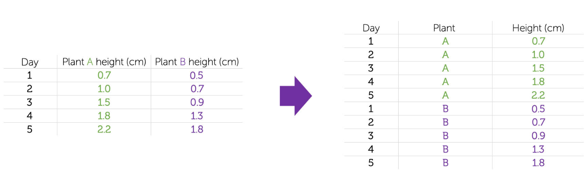
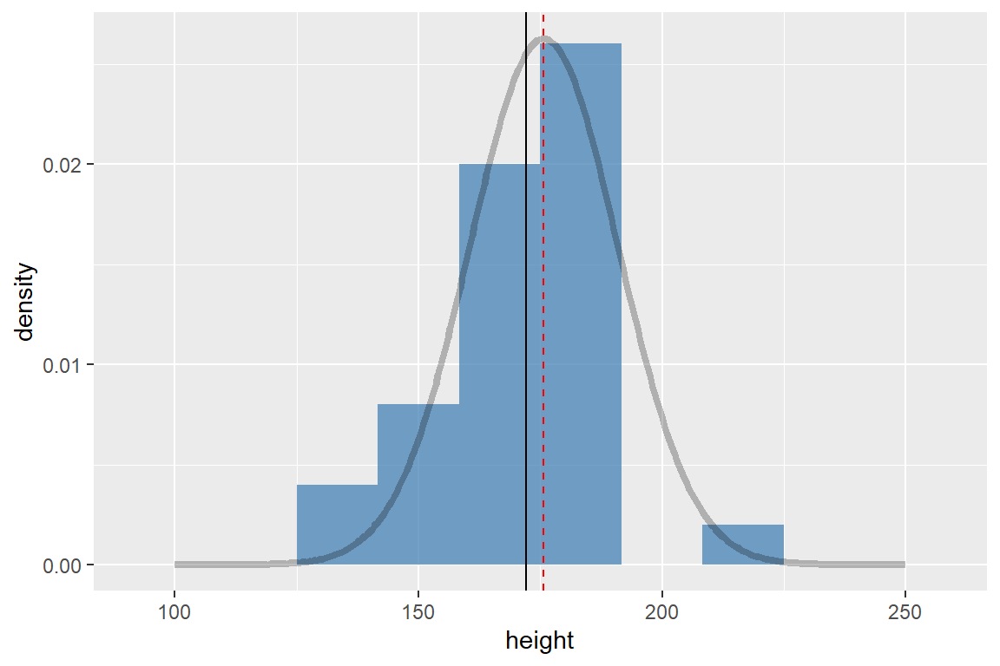
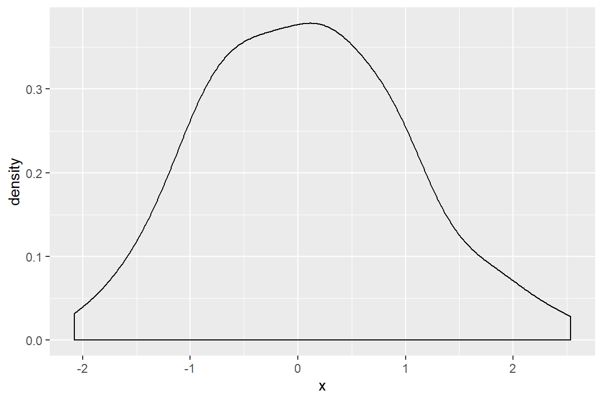
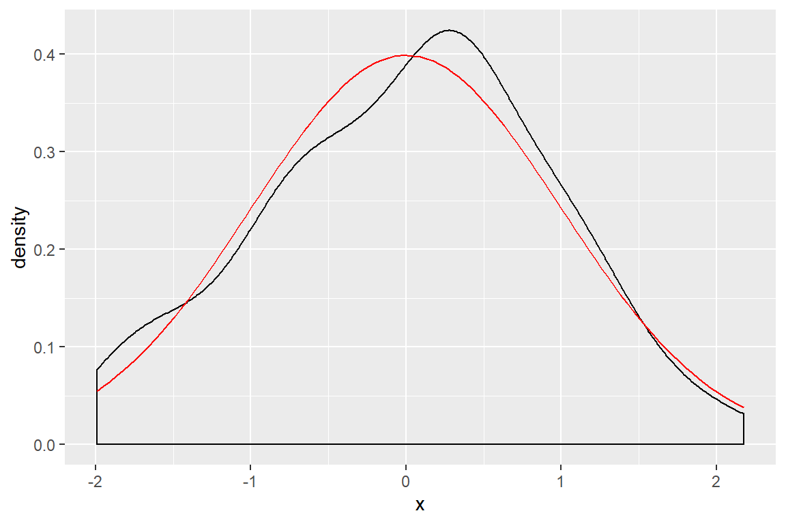
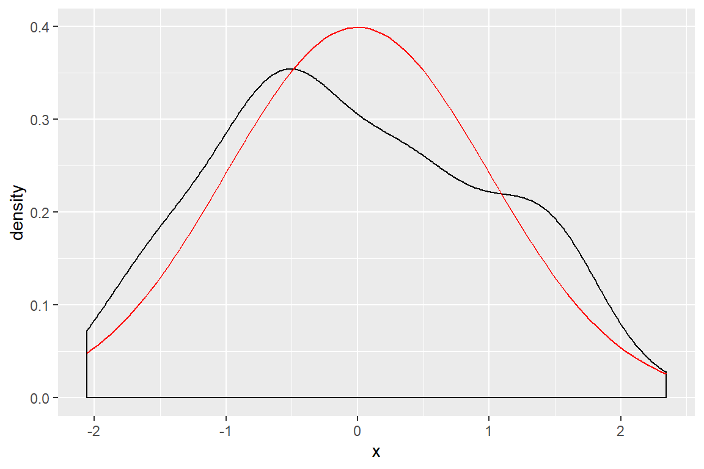
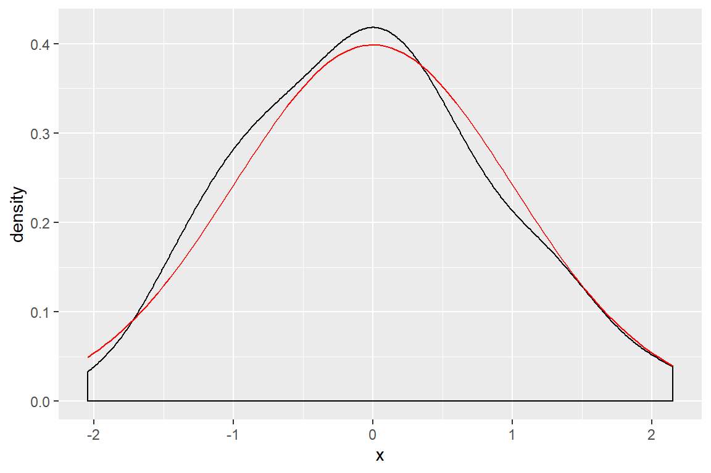
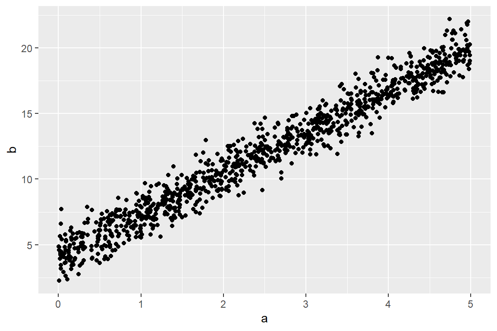
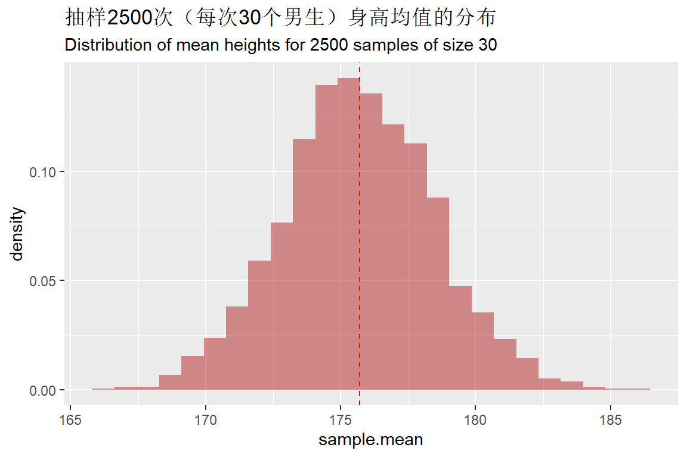
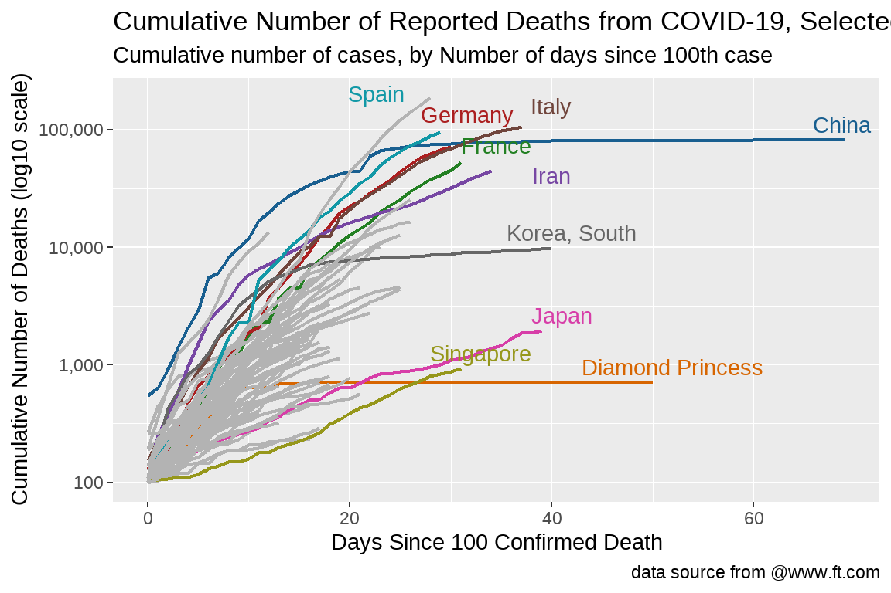
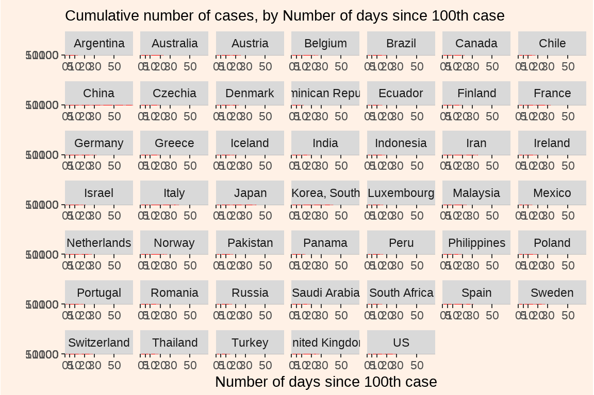

第 13 章 tidyverse中的若干技巧
聊聊tidyverse中常用的一些小技巧
“most of data science is counting, and sometimes dividing” — Hadley Wickham
13.1 From gather() to pivot()
make data tidy

VARIABLE, OBSERVATION, VALUE
- Each variable is a column
- Each observation is a row
- Each type of observational unit is a table
plant_heigt <- data.frame(
Day = 1:5,
A = c(0.7, 1.0, 1.5, 1.8, 2.2),
B = c(0.5, 0.7, 0.9, 1.3, 1.8)
)
plant_heigt大家想想，
- 把植物高度大于或等于0.8cm的筛选出来，怎么写语句?
- 用不同的颜色画出两种植物生长曲线，怎么写语句?
想用上面的语句，数据就得变形。那么怎么变形呢？

从2019年9月份，tidyr 1.0.0新增了一组函数pivot_longer()/pivot_wider()，用来补充和完善原来的gather()/spread()
gather()/pivot_longerit makes “wide” data longer.spread()/pivot_widerit makes “long” data wider.

所以现在使用pivot_longer()函数
plant_heigt %>%
pivot_longer(
cols = -Day, # A:B 或者 c(A, B) 或者 c("A", "B")
names_to = "plant",
values_to = "height"
)
13.2 count()
我之前多次用到count()函数，其功能就是统计某个变量中各组出现的次数
df <- tibble(
name = c("Alice", "Alice", "Bob", "Bob", "Carol", "Carol"),
type = c("english", "math", "english", "math", "english", "math"),
score = c(60.2, 90.5, 92.2, 98.8, 82.5, 74.6)
)
df如果用之前讲的group_by() + summarise()来写，
count() 还有更多强大的参数， 比如
如果不用count()，用group_by() + summarise()写，
df %>%
group_by(name) %>%
summarise(
n = n(),
total_score = sum(score, na.rm = TRUE)
) %>%
arrange(desc(total_score))当然，count()在特定场合下的简便写法，遇到复杂的分组统计，还是得用用group_by() + summarise()组合。
13.4 add_count()
想增加一列，代表每人参加的考试次数
可以有更简单的方法
13.5 nth(), first(), last()
## [1] "a"## [1] "k"## [1] "d"## [1] "a"## [1] "k"用在数据框中，同样可以使用
13.8 case_when
df %>% mutate(
assess = case_when(
score < 70 ~ "general",
score >= 70 & score < 80 ~ "good",
score >= 80 & score < 90 ~ "very_good",
score >= 90 ~ "best",
TRUE ~ "other"
)
)13.10 drop_na()
13.11 replace_na()
之前讲正则表达式也有类似的函数stringr::str_replace_na()，
13.12 coalesce
dt <- tribble(
~x, ~y,
1, NA,
2, NA,
NA, -3,
NA, -4,
5, -5
)
dt %>% mutate(
z = coalesce(x, 0)
# z = coalesce(x, y)
)有时候，我们可能为了减少信息丢失，想填充NA
dt <- tribble(
~name, ~age,
"a", 1,
"b", 2,
"c", NA,
"d", 2
)
dt %>%
mutate(
age_adj = ifelse(is.na(age), mean(age, na.rm = TRUE), age)
)13.13 summarise() 生成 list-column
summarize()会生成一个value，
library(gapminder)
gapminder %>%
group_by(continent) %>%
summarise(
avg_gdpPercap = mean(gdpPercap)
)summarize()也可以生成一个list，
library(gapminder)
gapminder %>%
group_by(continent) %>%
summarise(test = list(t.test(gdpPercap))) %>% # 单样本的t检验
mutate(tidied = purrr::map(test, broom::tidy)) %>%
unnest(tidied) %>%
ggplot(aes(estimate, continent)) +
geom_point() +
geom_errorbarh(aes(
xmin = conf.low,
xmax = conf.high
))
gapminder %>%
group_by(continent) %>%
summarise(test = list(lm(lifeExp ~ gdpPercap))) %>% # 线性回归
mutate(tidied = purrr::map(test, broom::tidy, conf.int = TRUE)) %>%
unnest(tidied) %>%
filter(term != "(Intercept)") %>%
ggplot(aes(estimate, continent)) +
geom_point() +
geom_errorbarh(aes(
xmin = conf.low,
xmax = conf.high,
height = .3
))
以下两种方法，同样完成上面的工作，具体方法会在第 20 章介绍
13.14 count() + fct_reorder() + geom_col() + coord_flip()
最好用的四件套
gapminder %>%
distinct(continent, country) %>%
count(continent) %>%
ggplot(aes(x = continent, y = n)) +
geom_col()
gapminder %>%
distinct(continent, country) %>%
count(continent) %>%
ggplot(aes(x = fct_reorder(continent, n), y = n)) +
geom_col() +
coord_flip()
画图容易，但画出一张好图并不容易
gapminder %>%
distinct(continent, country) %>%
count(continent) %>%
mutate(coll = if_else(continent == "Asia", "red", "gray")) %>%
ggplot(aes(x = fct_reorder(continent, n), y = n)) +
geom_text(aes(label = n), hjust = -0.25) +
geom_col(width = 0.8, aes(fill = coll) ) +
coord_flip() +
theme_classic() +
scale_fill_manual(values = c("#b3b3b3a0", "#D55E00")) +
theme(legend.position = "none",
axis.text = element_text(size = 11)
) +
labs(title = "我的标题", x = "")
或者偷懒，将continent == "Asia"的结果直接赋值给aes(fill = ___ )， 效果与上面是一样的。
gapminder %>%
distinct(continent, country) %>%
count(continent) %>%
ggplot(aes(x = fct_reorder(continent, n), y = n)) +
geom_text(aes(label = n), hjust = -0.25) +
geom_col(width = 0.8, aes(fill = continent == "Asia") ) +
coord_flip() +
theme_classic() +
scale_fill_manual(values = c("#b3b3b3a0", "#D55E00")) +
annotate("text", x = 3.8, y = 48, label = "this is important\ncase",
color = "#D55E00", size = 5) +
annotate(
geom = "curve", x = 4.1, y = 48, xend = 4.1, yend = 35,
curvature = .3, arrow = arrow(length = unit(2, "mm"))
) +
theme(legend.position = "none",
axis.text = element_text(size = 11)
) +
labs(title = "我的标题", x = "")
13.15 scale_x/y_log10
现实世界很多满足对数规则
- 各国人均GDP
- 各国人口
- 不同人士的收入
- 公司的营业额

gapminder %>%
ggplot(aes(x = gdpPercap, y = lifeExp)) +
geom_point() +
scale_x_log10() # A better way to log transform
13.16 fct_lump
门诊病症的流水记录
tb <- tibble::tribble(
~disease, ~n,
"鼻塞", 112,
"流涕", 130,
"发热", 89,
"腹泻", 5,
"呕吐", 12,
"咳嗽", 102,
"咽痛", 98,
"乏力", 15,
"腹痛", 2,
"妄想", 3,
"幻听", 6,
"失眠", 1,
"贫血", 8,
"多动", 2,
"胸痛", 4,
"胸闷", 5
)p1 <- tb %>%
uncount(n) %>%
ggplot(aes(x = disease, fill = disease)) +
geom_bar() +
coord_flip() +
theme(legend.position = "none")
p2 <- tb %>%
uncount(n) %>%
mutate(
disease = forcats::fct_lump(disease, 5),
disease = forcats::fct_reorder(disease, .x = disease, .fun = length)
) %>%
ggplot(aes(x = disease, fill = disease)) +
geom_bar() +
coord_flip() +
theme(legend.position = "none")
13.17 unite
df <- tribble(
~school, ~class,
"chuansi", "01",
"chuansi", "02",
"shude", "07",
"shude", "08",
"huapulu", "101",
"huapulu", "103"
)
dfdf_united <- df %>%
unite(school, class, col = "school_plus_class", sep = "_", remove = FALSE)
df_united当然，简单的情况也可以用mutate()实现
13.18 separate()
如果用mutate()来实现，语句就会比较复杂些
df_united %>%
mutate(sch = str_split(school_plus_class, "_") %>% map_chr(1)) %>%
mutate(cls = str_split(school_plus_class, "_") %>% map_chr(2)) 如果每行不是都恰好分隔成两部分呢？就需要tidyr::extract(), 使用方法和tidyr::separate()类似
df <- tribble(
~school_class,
"chuansi_01",
"chuansi_02_03",
"shude_07_0",
"shude_08_0",
"huapulu_101_u",
"huapulu_103__p"
)
df13.19 extract()
有时候分隔符搞不定的，可以用正则表达式，讲捕获的每组弄成一列
13.20 crossing()
先看看效果
这个函数在数据模拟的时候很方便，
crossing(trials = 1:10, m = 1:5) %>%
group_by(trials) %>%
mutate(
guess = sample.int(5, n()),
result = m == guess
) %>%
summarise(score = sum(result) / n())再来一个例子
sim <- tribble(
~f, ~params,
"rbinom", list(size = 1, prob = 0.5, n = 10)
)
sim %>%
mutate(sim = invoke_map(f, params))rep_sim <- sim %>%
crossing(rep = 1:1e5) %>%
mutate(sim = invoke_map(f, params)) %>%
unnest(sim) %>%
group_by(rep) %>%
summarise(mean_sim = mean(sim))
head(rep_sim)rep_sim %>%
ggplot(aes(x = mean_sim)) +
geom_histogram(binwidth = 0.05, fill = "skyblue") +
theme_classic()
也可用在较复杂的模拟，比如下面介绍的大数极限定理，
sim <- tribble(
~n_tosses, ~f, ~params,
10, "rbinom", list(size = 1, prob = 0.5, n = 15),
30, "rbinom", list(size = 1, prob = 0.5, n = 30),
100, "rbinom", list(size = 1, prob = 0.5, n = 100),
1000, "rbinom", list(size = 1, prob = 0.5, n = 1000),
10000, "rbinom", list(size = 1, prob = 0.5, n = 1e4)
)
sim_rep <- sim %>%
crossing(replication = 1:50) %>%
mutate(sims = invoke_map(f, params)) %>%
unnest(sims) %>%
group_by(replication, n_tosses) %>%
summarise(avg = mean(sims))sim_rep %>%
ggplot(aes(x = factor(n_tosses), y = avg)) +
ggbeeswarm::geom_quasirandom(color = "lightgrey") +
scale_y_continuous(limits = c(0, 1)) +
geom_hline(
yintercept = 0.5,
color = "skyblue", lty = 1, size = 1, alpha = 3 / 4
) +
ggthemes::theme_pander() +
labs(
title = "50 Replicates Of Mean 'Heads' As Number Of Tosses Increase",
y = "mean",
x = "Number Of Tosses"
)
数值模拟我们会在第 15 章专门介绍。